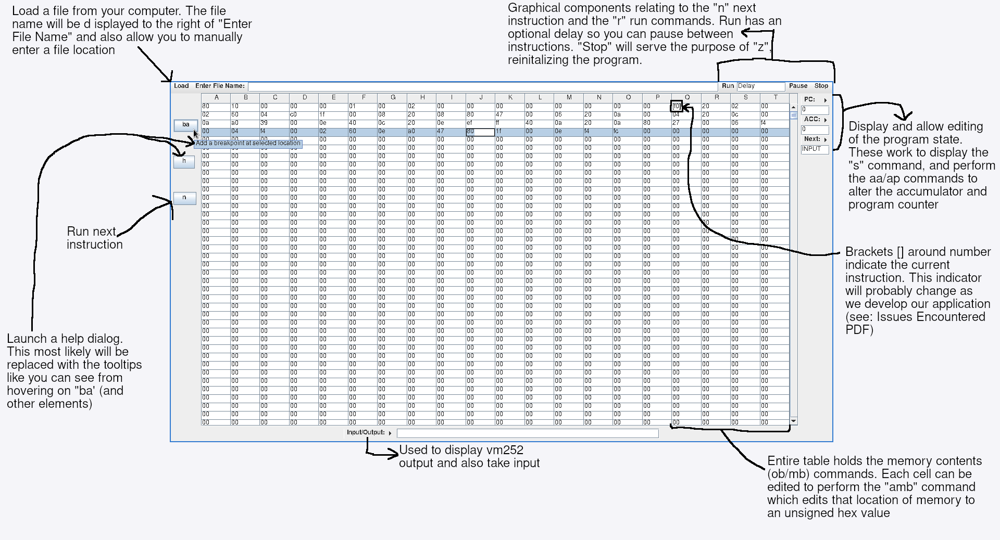

Group 1: Phase 5
Table of Contents
1. Repository Information
Below you will find our repository URL, hosted on GitHub, as well as the revision number and date of our final commit for this phase of the project.
| URL | https://github.com/mertad01/vm252-project |
| Revision | TK |
| Date | TK |
2. GUI Explanation Image

3. Progress Report
During our designing of the application in Java Swing a few design issues were made clear. Different aspects of our design have been tweaked to embrace the graphical user interface design. Below we cover the changes we have made, issues encountered in making those changes, and our plans for the future to improve our design. Our work is contained in the “edu.luther.cs252.group1” package. Main.java will launch the application. Within the “model” package we have a semi-working skeleton of the model we will use, which implements Observable. Our program frame, views, and controllers are in the viewcontroller directory and are all implementing Observer so that they will be able to react to changes in the model once we integrate it.
3.1. Changes Made
In phase04 our Accumulator and Program Counter did not have explicit text fields where they could be viewed and or edited. In the implementation of our design we added these text fields on the right hand side (same location as our design). This lets us remove the aa and ap commands from the menu since the text fields will perform those actions.
We also began testing how we will show our data in the center, which in turn let us remove the mb and ob commands which are fulfilled by our graphical representation of the model. Currently we have it set up with a JTable which holds memory values represented as hex (using placeholder data for this stage of the project, later it will be generated from the model).
During development of our initial graphical application we also found a way we can remove an explicit h help command and instead have each element explain itself. We have added tool-tips using the setToolTipText() method which is available to components. This lets the user hover over each element on the screen to get vital information to how they can use the program. We believe that this is a more elegant way of explaining each feature of the debugger rather than displaying a dialog box containing a list of explanations.
3.2. Issues Encountered
A few issues have been encountered and will need to be changed in the future (see the “changes to make” section below). One of these was what way we are going to display the program memory. Using a JTable seems like a good path forward but it will come with a few issues that must be solved. First, we will want a better way of adding break points. Currently our design would, when the model is integrated, allow you to click a cell and add a breakpoint by clicking a button. This causes the problem of being able to visually tell the user where breakpoints are. In the future we might try to add a checkbox as well as the input field to each cell of the table so that users can toggle on and off breakpoints at certain memory addresses.
Displaying the current memory instruction using the tables was also an issue we encountered. We opted to use brackets, such as [f0], around the memory instruction to indicate it to be the current instruction. This represents highlighting which we were not yet able to get working. It seems that in order to change the highlighting of individual cells will require overriding some methods relating to cell rendering which will take some investigation. Because of this we will also reconsider using different components to build our memory as a solution to the problem.
3.3. Changes to Make
There are not many large changes that need to be made with the user interface as of now. One item we would like to change is to use icons for the next, run, pause, and stop buttons (which we had in our phase04 design). We also plan on switching to a different method of adding break points by using check boxes or switching from a JTable to some different set of components to represent the data (as discussed in the “issues encountered” section above). Going forward we also will better integrate our model into the interface as it is developed.
3.4. Work Log
3.4.1. Michael Musa
| Date | Hours Worked |
|---|---|
| 11/05/21 | 03:00pm-05:30pm |
| 11/07/21 | 07:00pm-08:00pm |
| 11/08/21 | 02:00pm-02:30pm |
| 11/09/21 | 11:10am-12:42pm |
| Total: | ~6 Hours |
3.4.2. Adam Mertzenich
| Date | Hours Worked |
|---|---|
| 11/05/21 | 05:00pm-07:00pm |
| 11/07/21 | 06:00pm-08:30pm |
| 11/07/21 | 04:00pm-08:00pm |
| 11/09/21 | 06:30am-07:30am |
| Total: | ~9 Hours |
3.4.3. Kritib Bhattarai
| Date | Hours Worked |
|---|---|
| 11/04/21 | 12:00pm-01:00pm |
| 11/06/21 | 05:00pm-06:00pm |
| 11/07/21 | 12:00pm-01:00pm |
| 11/09/21 | 09:30pm-10:00pm |
| Total: | ~4 Hours |